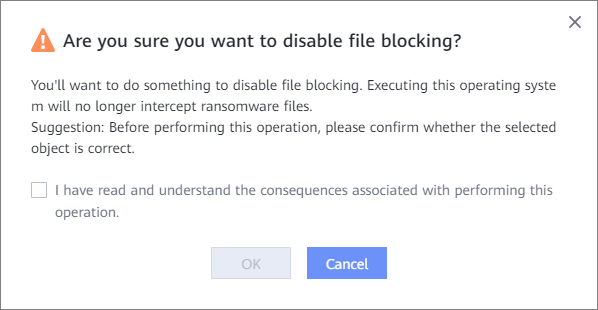

This section describes how to disable the file interception function if you do not need it.
Procedure
- Choose Data Security > File Interception.
- In the row that contains the file system for which you want to disable file interception, and choose .

You can also select multiple file systems and choose .
- In the Danger dialog box, confirm the information, select I have read and understand the consequences associated with performing this operation., and click OK.
